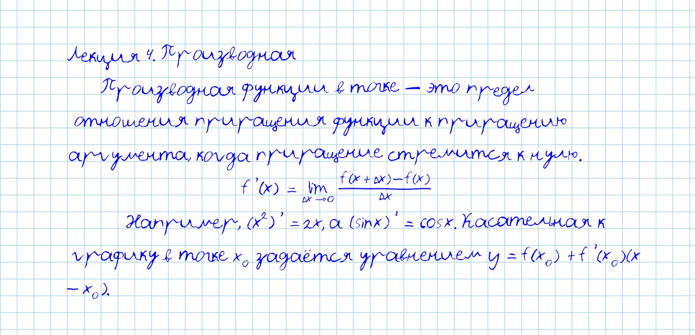
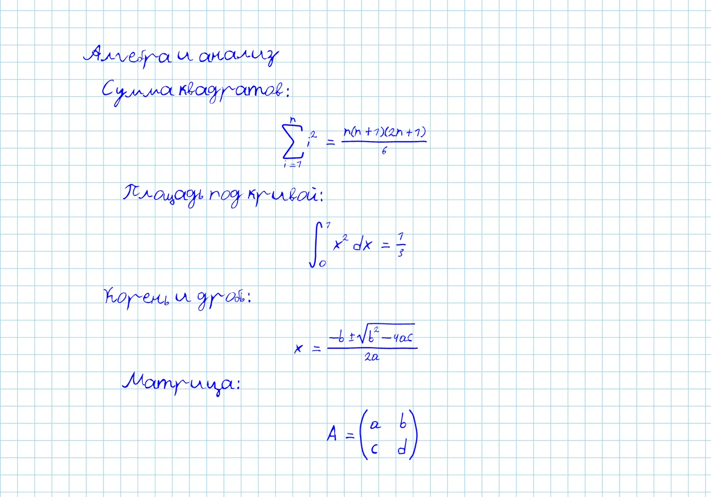
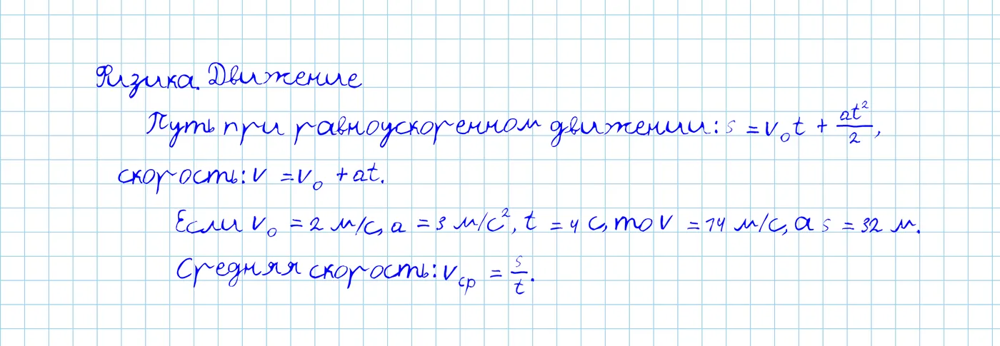
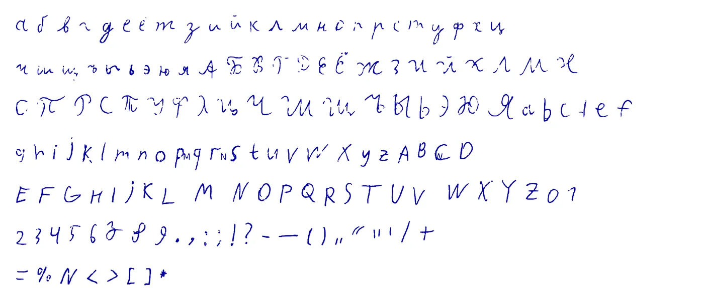

Конспект, который выглядит написанным от руки
Загрузите лекцию из Word, LaTeX или текстового файла. Shrift перепишет её вашим почерком на листе в клетку и соберёт PDF для печати.
Работает в браузере. Документы остаются на вашем компьютере.

Что получается
Над каждой страницей исходный текст, под ним результат. Все картинки на этом сайте сделаны самим Shrift.


Почему это не похоже на печатный текст
Ваш почерк
Заполните бланк, сфотографируйте его, и Shrift соберёт шрифт из ваших букв. Можно взять и готовый шрифт или принести свой.
Живая бумага
У каждой буквы несколько вариантов, строки слегка гуляют, нажим и наклон меняются. Страница не выглядит как копия.
Формулы как в тетради
Дроби стоят в два этажа, индексы и степени на своих местах, а скобки растут вместе с содержимым.
Шрифт из вашего почерка
Распечатайте бланк, напишите в клетках по одному символу, сфотографируйте оба листа. Через несколько секунд шрифт готов, его можно сразу применить к конспекту или скачать.
Справа шрифт, собранный из фотографии живого, не самого аккуратного бланка: ручка была так себе.

Попробуйте на своём конспекте
Открыть ShriftКак это работает
Загрузите документ
Подойдёт DOCX, LaTeX, Markdown или обычный текст. Формулы можно записывать в LaTeX или вставлять из Word.
Выберите почерк
Возьмите готовый шрифт, принесите свой файл .ttf или создайте шрифт из своего почерка по бланку.
Настройте лист
Клетка или линейка, поля, размер букв, наклон, нажим, небрежность строк. Страница меняется сразу.
Скачайте PDF
Готовый конспект уходит на печать без правок.
Тарифы
Сейчас Shrift бесплатный. Мы готовим аккаунты и подписку, о цене и составе сообщим заранее.
Бесплатный
- Загрузка DOCX, LaTeX, Markdown, TXT
- Свой шрифт файлом .ttf
- Шрифт из вашего почерка по бланку
- Экспорт в PDF
Про
- Аккаунт и вход по почте
- Сохранение шрифтов и настроек в облаке
- Выбор цветовой темы в профиле
Вопросы
Мои документы куда-то отправляются?
Нет. Текст обрабатывается в вашем браузере, документы никуда не загружаются.
Нужен ли интернет?
Да. Сайт проверяет связь при запуске и без интернета не откроется. Первый запуск скачивает движок (около 44 МБ), дальше он берётся из кэша браузера и открывается быстро.
Какие форматы поддерживаются?
DOCX, LaTeX, Markdown и обычный текст.
Какие формулы получаются?
Дроби, степени и индексы, суммы, интегралы, пределы, корни, матрицы и системы уравнений.
Можно ли использовать другой шрифт?
Да, загрузите файл .ttf. Лицензия на шрифт остаётся за вами: Shrift его не хранит и не раздаёт. В приложении есть список рекомендуемых шрифтов со ссылками на авторов.
Как сделать шрифт из своего почерка?
Скачайте бланк в приложении, распечатайте, заполните по одному символу в клетке и сфотографируйте оба листа. Всё остальное сделает Shrift.